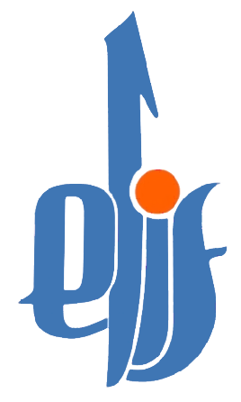

<!DOCTYPE html>
<html>
  <head>
    <meta charset="utf-8">
    <meta name="viewport" content="initial-scale=1, maximum-scale=1, user-scalable=no, width=device-width">
    <title></title>

    <link href="lib/ionic/css/ionic.css" rel="stylesheet">
    <link href="css/style.css" rel="stylesheet">

    <!-- IF using Sass (run gulp sass first), then uncomment below and remove the CSS includes above
    <link href="css/ionic.app.css" rel="stylesheet">
    -->

    <!-- ionic/angularjs js -->
    <script src="lib/ionic/js/ionic.bundle.js"></script>

    <!-- cordova script (this will be a 404 during development) -->
    <script src="js/ng-cordova.min.js"></script>
    <script src="cordova.js"></script>

    <!-- your app's js -->
    <script src="js/app.js"></script>
      
  </head>
  <body ng-app="starter" ng-controller="ListaCtrl" >
   <ion-tabs class="tabs-light tabs-icon-top">
    <ion-tab icon="ion-home" title="Fillimi" ui-sref="home"> 
       <ion-nav-view name="home"></ion-nav-view>
    </ion-tab>
    <ion-tab icon="ion-navicon" title="Lista" ui-sref="playlist">
       <ion-nav-view name="playlist"></ion-nav-view>
    </ion-tab>
	<ion-tab icon="ion-radio-waves" title="Duke Shikuar" ui-sref="now-playing">
		<ion-nav-view name="nowplaying"></ion-nav-view>
	</ion-tab>
  </ion-tabs>
  
	<script type="text/ng-template" id="home.html">
	  <ion-view title="Home">
		<ion-content padding="true">
		  <br>
            <div style="text-align:center" class="padding">
                Mësimi më i lehtë i shkronjave të Kuranit përmes emisionit "Elif" në Peace TV me hoxhën Qemail Sopi dhe fëmijët. Emisioni është produkt i PeaceTv Shqip ndërsa përshtatja e saj për aplikacionin u bë nga Afrim Azizi.<br>
                <a onclick="window.open('http://facebook.com/afrimaz','_system','location=yes'))" class="button icon-left ion-chevron-right button-clear button-dark padding" style="text-decoration:none; color:#222;">Kontakt - Afrim Azizi</a><br>
                <a onclick="window.open('http://www.qsi-ks.com/webi/peacetv.php','_system','location=yes')" class="button icon-left ion-chevron-right button-clear button-dark padding" style="text-decoration:none; color:#222;">Kontakt - PeaceTv Shqip</a>
            </div>
            
		</ion-content>
	  </ion-view>
	</script>

	<script type="text/ng-template" id="playlist.html">
	  <ion-view title="Video Playlist">
	   <div class="bar bar-header bar-light">
		  <button class="button button-icon icon ion-home" ui-sref="home"></button>
		  <div class="h1 title">Lista e emisioneve </div>
		  
		</div>
		<ion-content padding="true" class="has-header" >
			   <label class="item item-input">
				<i class="icon ion-search placeholder-icon"></i>
				<input type="text" placeholder="Kërko..." ng-model="query.snippet.title">
			</label>
		   <ion-list>
		   <ion-item class="item-thumbnail-left item-text-wrap" ui-sref="now-playing" ng-repeat="item in items | filter:query "  class="item-thumbnail-left" ng-click="playvideo(item.snippet.resourceId.videoId,item.snippet.title)">
				
				<h2>{{item.snippet.title}}</h2>
				<p>Publikuar më: {{item.snippet.publishedAt | date }} </p>
                
		   </ion-item>
		   </ion-list>
		  
		</ion-content>
	  </ion-view>
	</script>
	
	<script type="text/ng-template" id="now-playing.html">
          <ion-view title="Now playing">
          <div class="bar bar-header bar-light">
              <button class="button button-icon icon ion-navicon" ui-sref="playlist"></button>
              <div class="h1 title item-text-wrap">Duke shikuar </div>
              <button class="button button-icon icon ion-share icon-right" ng-click="shareAnywhere()"></button>
          </div>
              <div class="bar bar-subheader bar-light">
              <div class="h4 item item-text-wrap text-center" id="now-playing"></div>
              </div>
            <ion-content class="has-subheader" padding="true">
              <div id="video-player" class="yt-player-wrapper padding"></div>
              
            </ion-content>
          </ion-view>
      </script>
      
  </body>
</html>
